Mit Zirkel und Geodreieck vom Sechszack über das Pentagramm bis zum Stern im Würfel. Beim Sechszack teilst du einen Kreis, beim Fünfzack konstruierst du ein regelmässiges Fünfeck, beim Stern im Würfel zeichnest du einen räumlichen Körper. Pro GZ-Stunde bearbeitest du einen Stern.
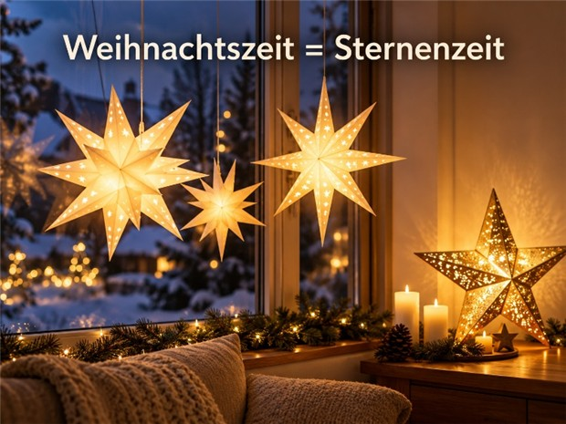
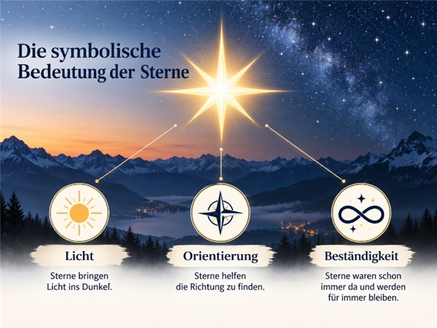
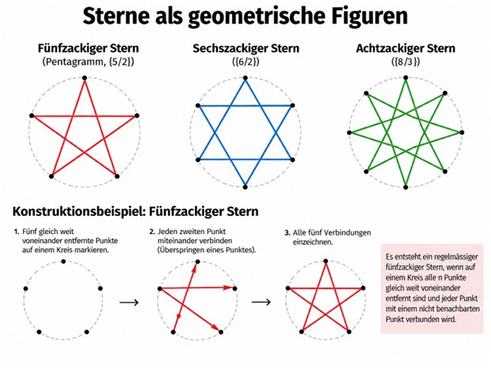
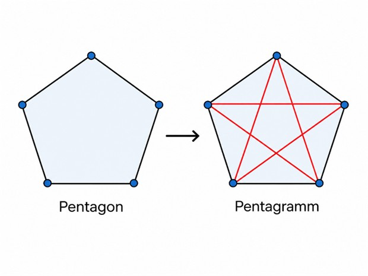
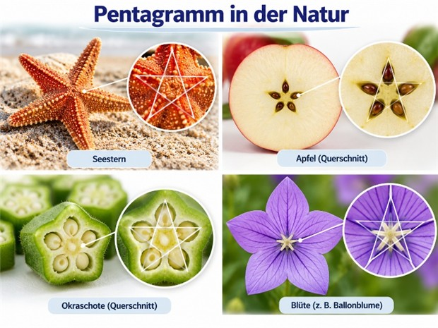
Tipp zu Schritt 5: Verbinde jede zweite Spitze dünn zu zwei grossen Dreiecken. Ihre Schnittpunkte sind die inneren Ecken des Sterns.
Zum Prüfen: Sind alle sechs Spitzen gleich weit voneinander entfernt, und treffen sich alle Linien im Mittelpunkt?
Zum Prüfen: Sind alle fünf Seiten des Fünfecks gleich lang (bei r = 80 mm ca. 94 mm)?
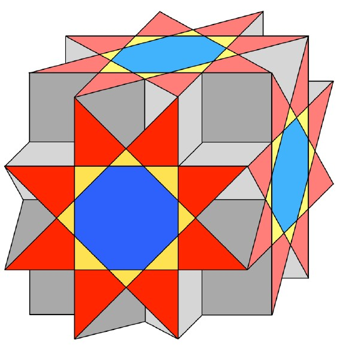
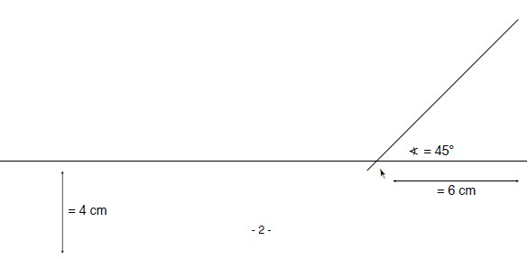
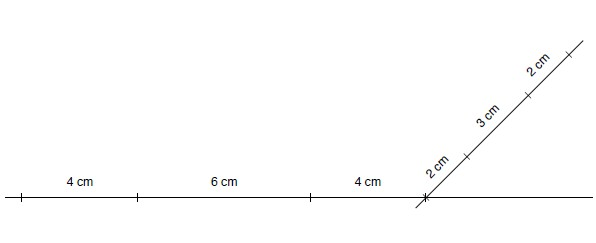
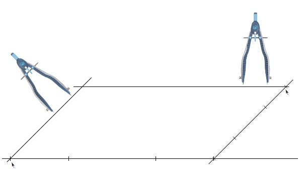
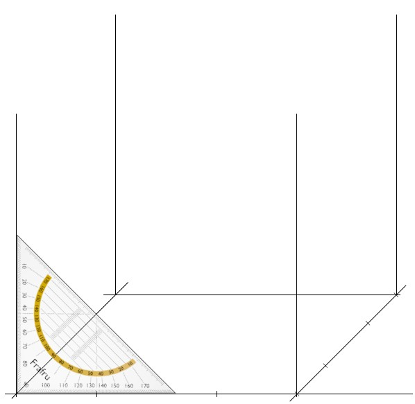
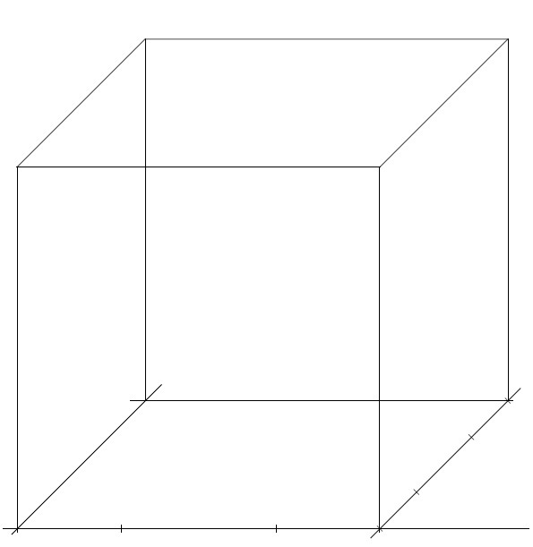
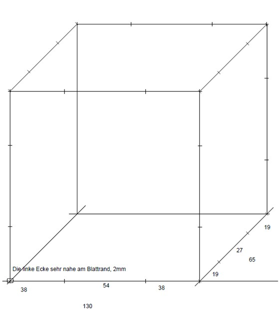
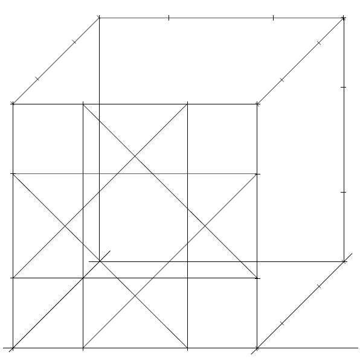
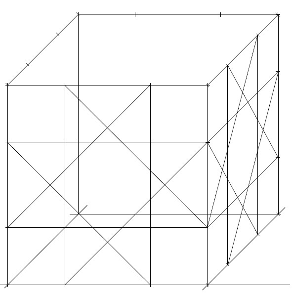
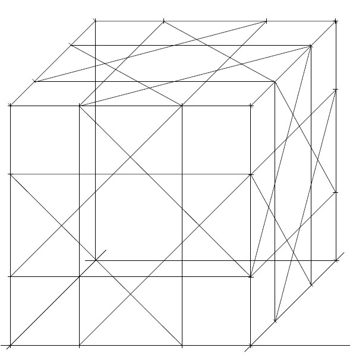
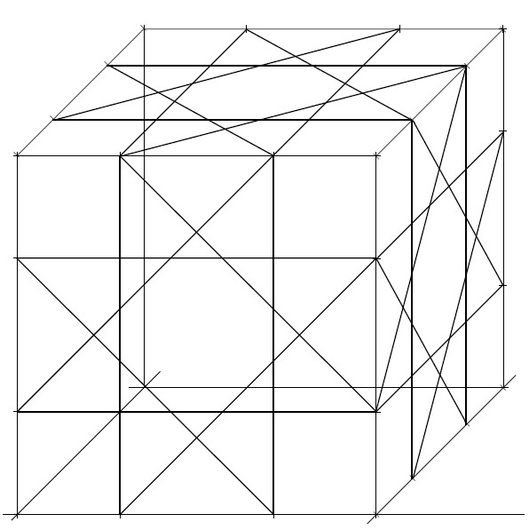
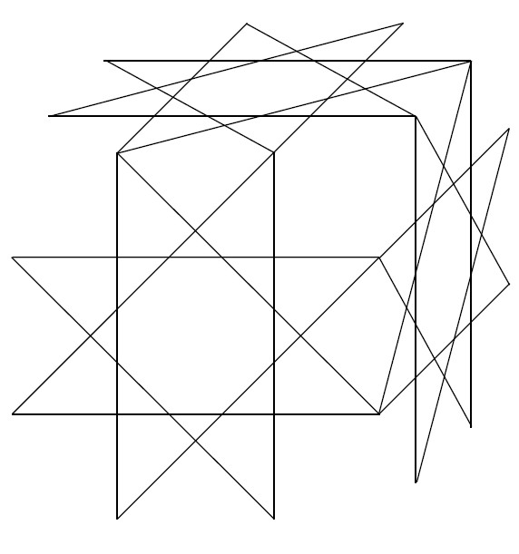
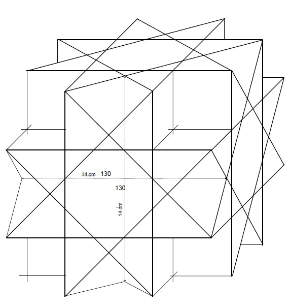
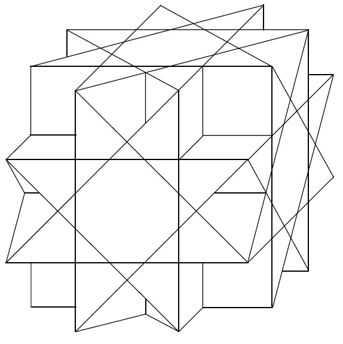
Zum Prüfen: Sind alle 45°-Kanten parallel, und sind die Sterne auf den drei Flächen gleich aufgebaut?
Ein achtzackiger Stern, in dessen Spitzen gerade Linien eine Kurve bilden. Er verbindet die Kreisteilung der Sterne mit der Fadengrafik der Strichbilder.
Tipp: Die Fadengrafik funktioniert genau wie bei Strichbild II «Welle». Zähle bei beiden Schenkeln immer von der Spitze aus.
Zum Prüfen: Sind alle acht Spitzen gleich, und ist die Kurve in jeder Spitze gleich schön gerundet?
Der Zirkel hat sich beim Abtragen verstellt. Der letzte Punkt trifft den Startpunkt nicht.
Lösung: Zirkel fest einstellen und vor jedem Abtrag kurz kontrollieren.
Ein Schnittpunkt (D, F oder G) war ungenau. Die Seiten werden verschieden lang.
Lösung: Seitenlänge EG messen (bei r = 80 mm ca. 94 mm) und alle fünf Seiten vergleichen.
Die schrägen Kanten wurden nach Augenmass gezogen und sind nicht parallel.
Lösung: jede Schrägkante mit dem Geodreieck in 45° zeichnen.
Lege deine drei Sterne nebeneinander. Welche Konstruktion war am anspruchsvollsten? Wo hat dir der Zirkel am meisten geholfen?
Reflexion: Welcher Stern wirkt durch die Farbgebung am räumlichsten, und warum?